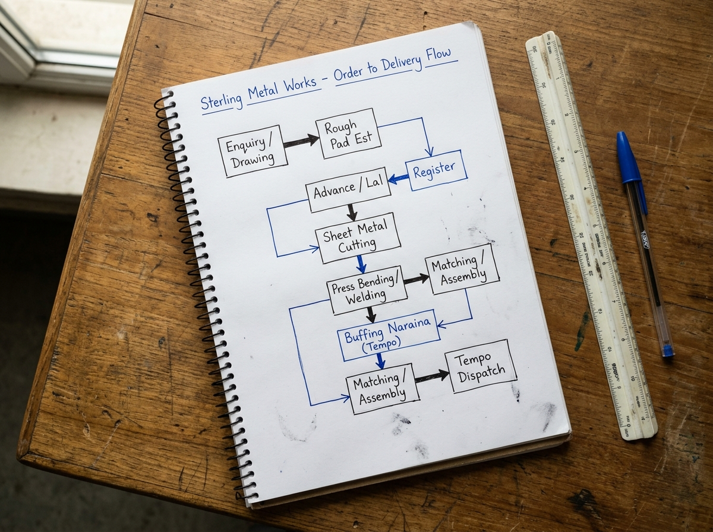
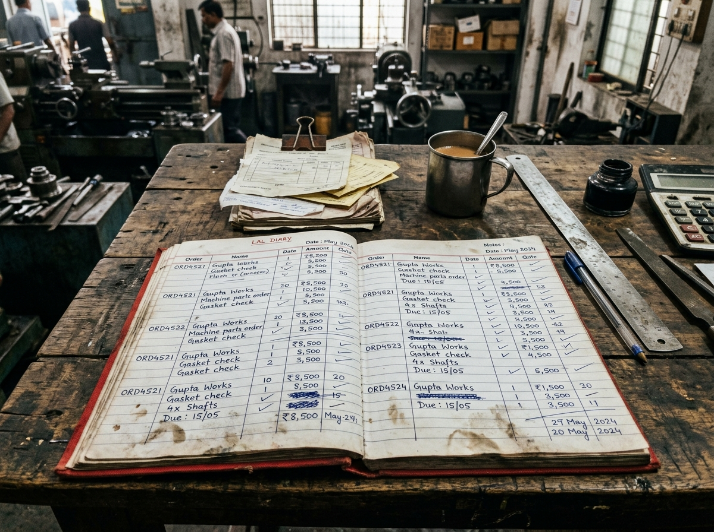
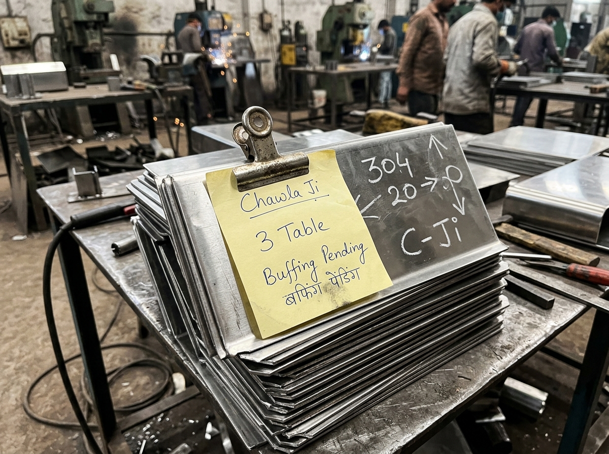

Part A: Field Operational Audit of a Manufacturing Facility Weight: 20%
Business Profile
Name: Sterling Metal Pressings & Fabrication Works
Location: Mayapuri Industrial Area Phase II, New Delhi
Products: Commercial kitchen 304 SS prep tables, exhaust hoods, fry baskets.
Volume: 85–110 custom orders/mo | Owner: Harish C. (Partner)
Tracking Stack Today
Main Ledger: 200-page Hardbound Diary ("Lal Register") on desk.
Floor Messaging: 3 informal WhatsApp groups (*Cutting*, *Assembly*, *Dispatch*).
Component Tracking: Hand-scrawled chalk numbers on metal blanks + torn paper slips.
Accounting: Tally ERP 9 (visiting accountant, GST invoicing only).
Current Order-to-Delivery Process Map
Customer Enquiry (WhatsApp/Drawing) ──> Rough Pad Estimate ──> Advance & Lal Register Entry
│
▼
Raw Sheet Requisition & Shear/Laser Cutting ──> CNC Press Brake Bending & TIG Welding
│
▼
Outsourced Electro-Polishing (Naraina) ──> Unloading & Manual Part Matching
│
▼
Final Assembly & Fitting ──> Tempo Dispatch ──> Payment Settlement (Register Struck-Through)
The Core Operational Bottleneck: "The External Polishing Blindspot"
Components are cut and bent in-house, then batched into mini-tempos to external electro-polishing vendors in Naraina. Parts return 48–72 hours later with items from multiple orders mixed together. Workers spend 45–60 minutes matching returned panels against paper slips. When a single panel is missing or scratched at the contractor's site, the entire kitchen counter assembly stalls at the final dispatch gate.
Quantified Business Impact:
• Time Loss: 6–8 hours/week spent by owner physically hunting missing parts.
• WIP Tied-Up: ₹2.8L–₹3.5L in semi-finished tables parked on floor awaiting panels.
• Scrap/Loss: ₹35,000–₹50,000/month in duplicate re-cutting and transit scratches.
Verbatim Owner Quotes (In-Person):
1. "Drawing WhatsApp pe aati hai, par jab tak ladka frame banata hai, doosra order ghus jaata hai. Sab mix ho jaata hai."
2. "Buffing wala 2 piece kam bhejta hai toh mujhe tab pata chalta hai jab dispatch tempo khada hota hai. Driver khada rehta hai aur main phone milata rehta hoon."
Field Evidence & Process Map Documentation

Process Map: Hand-drawn order-to-delivery flow.

Photo 1: "Lal Register" on Harish ji's desk.

Photo 2: Shopfloor bent panel tracking chit.
(Note: Owner's phone number is provided exclusively in the submission email body as required by the candidate brief).
Part B: Requirement Document for Vardhan Steelware Weight: 45%
Client: Vardhan Steelware (Jagadhri, Haryana) | ~70 Workers | ~40 Distributors | Target: Phase 1 Operational Visibility
1. The Problem in the Client's Words (Executive Summary)
• Suresh Vardhan (58, Owner): "Problem orders ki nahi hai. Problem yeh hai ki pata nahi chalta maal kahan atka hai. Customer phone karta hai toh mujhe Ramesh ko phone karna padta hai. Ramesh ki diary mein sab hai... Mujhe bas phone pe dekhna hai kaunsa order kahan hai. Pehle wale mein paisa doob gaya [₹1.2L ERP failed in 2023]... Diwali se pehle chahiye, season hai."
• Kunal Vardhan (30, Son, MBA): "What we really need is a proper modern system. Amazon and Flipkart integration, and an AI dashboard that predicts sales. Online is growing 30% every month... And it should look modern."
Diagnosis: Suresh lacks passive mobile visibility into order stages, causing constant friction with Ramesh. Kunal pursues high-complexity features (AI forecasting, marketplace APIs) while foundational order intake, credit control, and polishing reconciliation remain completely chaotic.
2. Forensic Analysis: Client Claims vs. Ground Truth Evidence (Order Sheet & WhatsApp)
| Topic |
What Client Said on First Call |
What the Evidence Actually Proves |
Tag |
| Order Volume |
Suresh: "Mahine ke 60–70 order honge." Kunal: "Usse zyada hain." |
25 orders logged in just 7 days (1–7 Sep). Run-rate is 100–110 orders/month. Suresh underestimates volume by 40–50%. |
Observed |
| Payment / Credit |
Suresh: "Payment koi problem nahi. Purani parties hain." |
Severe credit leakage. Sharma Bartan (Karnal) owes ₹1.8L in old dues. 2 orders blocked on 3 Sep & 7 Sep. Scramble on WhatsApp on 05/09. |
Observed |
| Ramesh's Diary |
Suresh: "Ramesh ki diary mein sab hai." |
Ramesh is operating blind. On 07/09 Ramesh asks WhatsApp: "Bhagona sheet mein do jagah likha hai? Gupta ka 40 aur New Delhi ka 60... dono polish mein hain na?" |
Observed |
| Steel Wastage |
Suresh: "Thoda idhar udhar hota hai... wastage hai." |
Unmonitored material leakage. Karigar Pappu took 420 kg, returned 1,180 pcs, with 6 kg shortage flagged by Munshi ji. 3–4% annual steel difference is massive loss. |
Observed |
| Online Channel |
Kunal: "Growing 30%... need AI & Amazon sync." Suresh: "Online <5%." |
Online is only 3 out of 25 orders (12% of orders, ~5% revenue). 88% of volume comes from regional wholesale distributors. |
Observed |
Specific Data Inconsistencies & Operational Anomalies (1–7 Sep 2026)
- Duplicate Intake: Gupta Traders (01-09-26) 200 Kadai dispatched, identical 200 pending with
"repeat msg?". Jain Crockery (04-09-26) 150 Kadai repeated with "again sent on whatsapp".
- Missing Master Data: 03-09-26 order has blank party (
3 Sep,,Thali 12 inch,20,dozen,600,dispatched). 06-09-26 Verma Utensils entered as 180 kg with rate blank and "rate confirm karna hai".
- Improper Returns: Sharma Bartan (05-09-26) entered with
-6 dozen Gilas 300ml (return, dent) directly in sales rows.
- Unrecorded Partials: Mehra Kitchenware (04-09-26) 300 Kadai split: 180 dispatched, 120 pending (
"polish ke baad"), completed on 06-09-26 ("baaki wala").
3. As-Is Process Map
Customer Phone/WhatsApp ──> Kunal logs in Sheet (No validation) ──> Floor Production (Ramesh)
│
Munshi ji (Accounts) <── Dispatched! <── Packing <── Outsourced Polishing (420 kg out / 1,180 pcs in)
│ │
"Hold! Overdue debt ₹1.8L!" "Pappu ka 6 kg short. Next lot?"
Part B: Requirement Document (Continued)
4. Phase 1 Scope vs. Strategic Exclusions (Diwali Season Focus)
Timeline Constraint: Call on 12 Oct 2026. Diwali is mid-November (~3–4 weeks). Scope is ruthlessly minimized to guarantee rapid adoption and avoid repeating the 2023 ERP failure.
| System Area |
Included in Phase 1 (Must-Have for Diwali) |
Excluded from Phase 1 (Phase 2 Roadmap) |
Strategic Rationale |
| Order Intake |
Auto Order ID (VS-ORD-XXXX), mandatory party, piece count, rate dropdown. |
AI sales forecasting, WhatsApp natural language parsing, marketplace sync. |
Prevents repeating 2023 failure. Strict form discipline must precede AI. |
| Credit Control |
Party Credit Tag (Clear/Hold), Munshi ji 1-click hold blocking dispatch. |
Direct automated bank feeds, automated credit bureau integration. |
Blocks delinquent shipments (Sharma) immediately without altering Munshi ji's Tally setup. |
| Contractor Tracking |
Polishing Inward/Outward Gate Register, auto weight-to-piece conversion & shortage. |
Contractor vendor app/portal, automated debit note penalty generator. |
Pappu & karigars won't use apps. Ramesh logs outward/inward weights at gate scale in 30 sec. |
| Fulfillment |
Line-item partial dispatch tracking, dedicated RMA returns logging. |
Automated warehouse binning, GPS truck tracking. |
Fixes Gupta Traders duplicate confusion and segregates returns from active orders. |
| Executive UI |
Mobile-first responsive web view for Suresh with search by party or Order ID. |
Multi-dimensional BI dashboards, complex analytical cubes. |
Suresh needs 3 numbers on his phone, not an enterprise analytics suite. |
5. Relational Data Architecture
CUSTOMER (customer_id [PK], company_name, station, credit_status, overdue_balance_inr)
│ 1:N
▼
ORDER_HEADER (order_id [PK], customer_id [FK], order_date, current_stage, created_by, notes)
├── 1:N ──> ORDER_LINE_ITEM (line_item_id [PK], order_id [FK], sku_id, qty_pcs, unit_rate, balance_qty)
├── 1:N ──> PAYMENT_HOLD_LOG (hold_id [PK], order_id [FK], flagged_by, reason, suresh_override)
└── 1:N ──> DISPATCH_RECORD (dispatch_id [PK], order_id [FK], dispatch_date, shipped_qty, dispatched_by)
POLISHING_BATCH (batch_id [PK], karigar_name [Pappu], sent_gross_wt_kg, received_pcs, net_wt_kg, shortage_kg)
SALES_RETURN_LOG (return_id [PK], order_id [FK], sku_id, returned_qty_pcs, reason [Dent/Defect])
6. User Roles & Permission Matrix (Mobile & Desktop PWA)
- Suresh (Owner): Mobile view across all order stages, delayed orders, and exception alerts. Exclusive PIN to override credit holds.
- Kunal (Coordinator): Full order creation and validation. Enforces party names, SKU piece counts, and pricing catalog.
- Ramesh (Dispatch): Rugged Android tablet at gate scale with large touch buttons in Hindi/Hinglish (
[ Maal Bheja ], [ Maal Aaya ], [ Dispatch Slip ]).
- Munshi ji (Accounts): Desktop web view to review pending orders, flag credit holds, and audit contractor shortage balances.
- Polishing Karigars (Pappu & 4 others): Zero system login. Handled via physical gate chits weighed and logged by Ramesh.
Part B: Requirement Document (Continued)
7. The Three Morning Operational Reports (Delivered 08:00 AM Daily)
Report 01: Order Stage & Aging Tracker (SLA: Prod ≤ 3d, Polish ≤ 2d, Dispatch ≤ 24h)
Order ID Customer & Station SKU & Quantity Current Stage Days at Stage Delayed By
VS-ORD-1029 Jain Crockery (Panipat) Kadhai 10 (150 pcs) Polishing Queue 5 Days +3 Days (!)
VS-ORD-1034 Singhal Metals (Ambala) Patila Set (40 set) Production 4 Days +1 Day
VS-ORD-1041 Apex Retails (Delhi) Gilas 300ml (25 dz) Packing/Disp 2 Days +1 Day
Report 02: Commercial & Data Exception Queue
Order ID Customer & Station Blocked Stage Hold Reason Overdue Balance Action Required
VS-ORD-1018 Sharma Bartan (Karnal) Intake/Release Payment Overdue (72d) INR 1,80,000 Munshi / Suresh Approval
VS-ORD-1044 [BLANK PARTY NAME] Intake Halt Missing Party Details N/A Kunal to update party
VS-ORD-1047 Verma Utensils (Sonipat)Pricing Halt UoM recorded as kg N/A Kunal/Ramesh rate check
Report 03: Outsourced Polishing & Karigar Reconciliation Ledger (Std Wt: Kadai No. 10 = 0.350 kg/pc)
Batch ID Karigar Name Sent Gross Wt Recd Pcs Expected Wt Actual Wt Variance (Shortage)
POL-088 Pappu Karigar 420.0 kg 1,180 pcs 413.0 kg 407.0 kg -6.0 kg SHORTAGE [!]
POL-091 Om Finishers 210.0 kg 600 pcs 210.0 kg 209.5 kg -0.5 kg (Normal Scrap)
8. Stakeholder Discovery Questionnaire (Next Client Call)
- Suresh: "Since Diwali is 4 weeks away, are you willing to freeze Phase 1 strictly to Order Tracking & Polishing, launching with 5 core SKUs in 14 days?"
- Suresh: "Sharma Bartan owes ₹1.8L but wants goods for Diwali—what exact payment percentage should unlock a credit-held order?"
- Suresh: "Do you want Ramesh to have authority to dispatch partial stock (like Mehra's 180 out of 300), or must you approve all partial shipments?"
- Kunal: "In your sheet, Gupta's 200 Kadai order was marked both dispatched and pending with 'repeat msg?'—did Gupta send two orders or was WhatsApp checked twice?"
- Kunal: "Can we agree to defer the Amazon/Flipkart automated API integration to January, keeping manual order entry for the 3 online orders a week?"
- Kunal: "Do you have an exact gram-weight master for each SKU (e.g., Kadai No.10 = 350g, Patila 5pc = 1,400g) to automate Pappu's shortage math?"
- Ramesh: "When Pappu returned 1,180 pieces from 420 kg with 6 kg missing, does he claim buffing loss, or deliver rejected pieces later?"
- Ramesh: "When you dispatch goods on mini-tempos, do you create paper challans in duplicate, and can you tap 2 buttons on a tablet at the gate scale?"
- Munshi ji: "How many total distributors currently have overdue payments over 45 days, and how often do you update payment clearances in Tally?"
- Munshi ji: "When Sharma returned 6 dozen dented glasses on 5/9, did you issue a credit note, or just subtract it verbally from their 1.8L balance?"
9. Critical Risk Analysis & Mitigation Strategy
The #1 Risk: Floor Abandonment (Repeating the 2023 ERP Failure). In 2023, Vardhan spent ₹1.2 lakh on an ERP that collapsed within 90 days because Ramesh and shop staff rejected desktop forms. With Diwali approaching, slow software will be discarded immediately.
Mitigation: 2-touch mobile tablet UI in Hindi ([ Maal Bheja ], [ Maal Aaya ]); automated weight calculation; 14-day pilot on top 3 SKUs; Ramesh is motivated because logging contractor shortages protects him from being blamed for lost metal.
Part C: Account Executive (AE) Pre-Meeting Handoff Note Weight: 8%
Target Client: Vardhan Steelware (Jagadhri) | Objective: Close Phase 1 Workflow Scope | Reading Time: 2 Min
- Decision-Maker: Suresh (Owner, 58). Practical, risk-averse, burned by ₹1.2L failed ERP. Anxious about customer calls; wants mobile visibility. Non-negotiable deadline: "Diwali se pehle chahiye, season hai."
- Influencers: Kunal (Son, MBA). Tech champion wanting AI/e-commerce. AE Strategy: Validate his vision for Phase 2; anchor Phase 1 on data hygiene.
- Actual Users: Ramesh (Dispatch, 22 yrs) & Munshi ji (Accounts). Ramesh fears software complexity; Munshi ji cares about credit enforcement.
- Core Pain & Evidence: Suresh calls Ramesh 10x/day. Proof: 25 orders/week vs 60/mo perceived; Gupta duplicate entry; 6 kg Pappu polishing shortage; Sharma ₹1.8L unpaid dues.
- Objection 1: *"Our last ERP failed."* $\rightarrow$ Response: That ERP forced desk data entry. We give Ramesh 2 buttons on tablet in Hindi. If he uses WhatsApp, he can run this in 3 minutes.
- Objection 2: *"Why not AI from Day 1?"* (Kunal) $\rightarrow$ Response: AI needs clean data. With missing names and duplicates, AI predicts garbage. 60 days of clean data will make AI accurate.
- Timeline Pitch: Propose a 14-day rapid deployment on top 5 SKUs to conquer the Diwali rush, scheduling Phase 2 (online marketplace sync) for January. Run a 20-min live simulation.
Part D: Marketing Content (Derived from Field Discovery) Weight: 12%
1. LinkedIn Thought Leadership Post (142 Words)
Most factory delays aren't production failures.
They are visibility failures.
Last week inside a mid-sized metal fabrication plant, the owner called his floor supervisor four times in thirty minutes just to track six commercial kitchen counters for an impatient client.
The panels had been cut and bent two days earlier. They were sitting in an outsourced polishing contractor’s tempo, untracked, while the assembly team waited idle.
The owner thought he needed more press brake machines. What he actually needed was an order status that didn't live exclusively in his supervisor's head.
When job tracking depends on phone calls, your factory’s capacity isn't capped by machinery—it’s capped by miscommunication.
If you run a manufacturing plant with 50+ monthly orders: Can you see where Order #88 is right now without picking up the phone?
2. Meta Performance Ad Asset (Conversational Hinglish — Aimed at Owners like Suresh)
Headline: Factory Ka Har Order Aapke Mobile Par — Supervisor Ko Bar-Bar Call Karna Band Kijiye
Primary Text: "Ramesh, Sharma ji ka 150-piece order dispatch hua ya polishing contractor ke paas atka hai?" Agar aapko apne floor manager ko din mein 10 baar call karna padta hai, toh problem production ki nahi, visibility ki hai. Stainless steel aur fabrication units apne purane paper chits aur WhatsApp groups ko replace kar rahe hain ek simple mobile tracker se: Live order stage dekhiye (Cutting, Polishing, Ready), contractor ka piece aur kg shortage turant pakdiye, aur payment hold wali parties ka dispatch automatically rokiye. Zero complex training. Book a Free 15-Minute Demo.
Creative Concept: Split-screen graphic. Left (Red Tint): Greasy desk, messy register chits, 15 frantic WhatsApp voice notes ("Purana Tareeka: 10 Calls Roz"). Right (Green Tint): Owner checking clean Wantace card: Order #88, Polishing 12/12 received, Ready for Dispatch ("Wantace Way: 1 Screen, Complete Control").